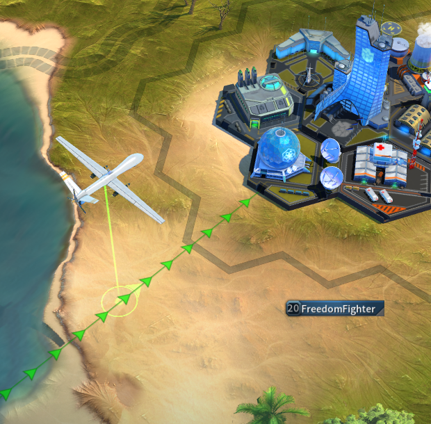

Scouting allows you to gather information about player cities and their defending troops, available resources and technology bonuses. You can also scout mines to find out how many enemy troops are gathering resources on a tile. Tap on a chosen tile and select the Scout button to send out your Scout Drone.
Scout marches require a march queue like troop marches but travel at higher speed.
The amount of information you get in your scout report depends on the Levels of your Spy, Intel and Recon. These levels can be increased by building Improvements in the Scientific District.
Scout features breakdown can be seen below:
Spy
| Level | Points | Effect |
|---|---|---|
| 1 | 1 | Scout Report shows approximate army amount currently at the targeted location, without any unit separation |
| 2 | 2 | Scout Report shows approximate army amount for all reinforcements in a Players Base, without player or unit separation |
| 3 | 4 | Scout Report shows exact amount of the Current and the Total Base Defense of the targeted player base |
| 4 | 6 | Scout Report shows names and HQ Levels of players who are reinforcing players on the targeted location. Also display Approximate army amount for each player, without unit separation |
| 5 | 9 | Scout Report shows approximate army amount per unit type for all player forces currently at the targeted location, without exact unit tiers |
| 6 | 12 | Scout Report shows approximate army amount per unit type for all reinforcing forces per each player currently at the targeted location, without exact unit tiers |
| 7 | 16 | Scout Report shows approximate army amount per unit type with exact tier for all player forces currently at the targeted location |
| 8 | 22 | Scout Report shows approximate army amount per unit type with exact tier for all reinforcing forces of each player currently at the targeted location |
| 9 | 30 | Scout Report shows exact unit types, tiers and numbers of all player armies currently occupying the targeted location |
| 10 | 40 | Scout Report shows exact unit types, tiers and numbers of all reinforcement armies currently occupying the targeted location |
| 11 | UBER | Scout Report shows ability status and cooldown times when scouting a player base |
Intel
| Level | Points | Effect |
|---|---|---|
| 1 | 3 | Alerts for incoming marches show the HQ level of the Player, marching towards your army regardless of position (Reinforcements, Base, Camp, Mine) |
| 2 | 4 | Scout Report shows the exact amount of the four basic resources in the targeted Player Base |
| 3 | 6 | Alerts for incoming marches show research bonuses of armies, marching towards your army |
| 4 | 8 | Scout Report shows research bonuses of the targeted player |
| 5 | 12 | Alerts for incoming marches display talent bonuses of armies, marching towards your army |
| 6 | 16 | Scout Report shows talent bonuses of targeted Player Base |
| 7 | 20 | Alerts for incoming marches show currently used equipment of the player, marching towards your army |
| 8 | 26 | Scout Report shows the equipment of target player's General |
| 9 | 32 | Alerts for incoming marches show all active Boosters of the player, marching towards your army regardless of position |
| 10 | 40 | Scout Report shows the Active Boosters of the targeted player |
Recon
| Level | Points | Effect |
|---|---|---|
| 1 | 2 | Alerts, World Map objects and Alliance battles show the name and avatar of the player/s, marching toward your army regardless of position (Reinforcements, Base, Camp, Gathering) |
| 2 | 3 | Alerts, World Map objects and Alliance battles show the exact coordinates of origin for armies, marching towards your army regardless of position (Reinforcements, Base, Camp, Gathering) |
| 3 | 5 | Alerts, World Map objects and Alliance battles show exact arrival time for armies marching towards your army. |
| 4 | 7 | Alerts, World Map objects and Alliance battles show full name and avatar of the owner of any march on the World Map. |
| 5 | 10 | Alerts, World Map objects and Alliance battles show exact coordinates of origin for all armies on the World Map, regardless of marching direction. |
| 5 | 14 | Alerts, World Map objects and Alliance battles show exact time for any march on the World Map regardless. |
| 5 | 18 | Alerts, World Map objects and Alliance battles show approximate size of the army, marching towards you only. (Overall number only, without unit separation) |
| 5 | 24 | Alerts for incoming marches show approximate size of the army, marching towards your army regardless of position by unit type, without exact tiers. |
| 5 | 32 | Alerts for incoming marches show approximate size of the army, marching towards your army regardless of position by unit type and exact tiers for each unit |
| 5 | 40 | Alerts, World Map objects and Alliance battles show the exact size of the army, marching towards your army regardless of position with exact tiers (for alerts only). |
* You can view details about your current Spy, Intel and Recon levels by selecting your science district and choosing the 'i' button to view your Science District's current progress.
Uber Scouts
With each scout, there is a small chance that you can get a better report than expected. This is what we call Uber Scouts. When you get such a report, the information contained within it will be one level above your current one. The percentage depends on the difference between yours and the targets HQ level. The larger the difference, the smaller the percentage. Abilities and their status can be viewed only within a Uber Scout report.